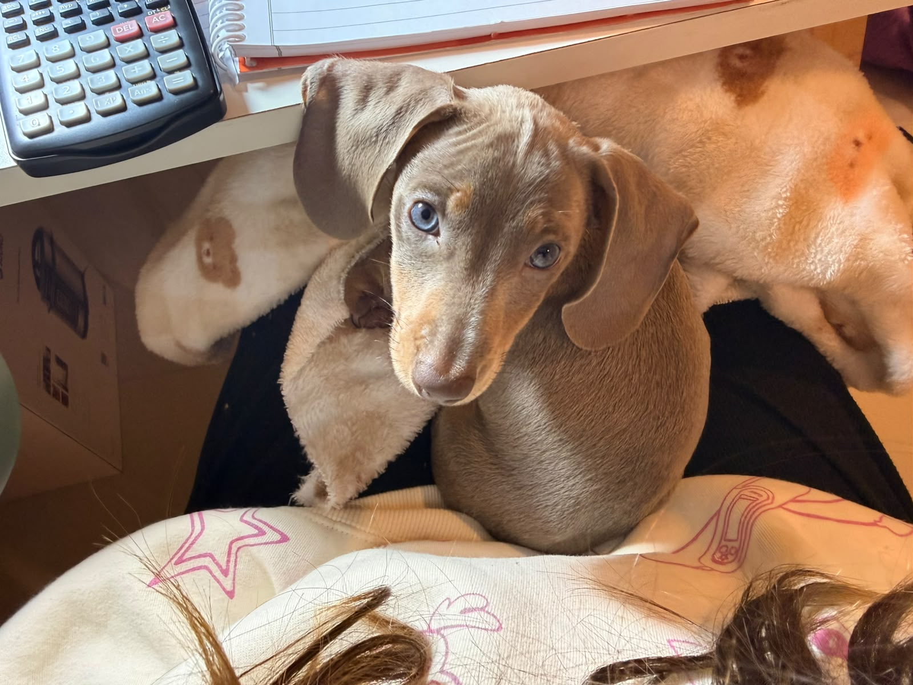

Coco se quedó sentado en mis piernas mientras yo estudiaba, acompañándome en silencio. Somos muy dependientes el uno del otro, así que no podía faltar en esta foto.
Datos de los salchis🌭
- Los salchichas suelen apegarse mucho a una persona en particular y les cuesta separarse de ella; es una raza conocida por su fidelidad y necesidad de compañía constante.
- Este apego fuerte puede derivar en ansiedad por separación si se quedan solos por mucho tiempo, por eso conviene acostumbrarlos de a poco a estar sin su persona de confianza.
- Buscar el contacto físico (sentarse en la falda, apoyarse contra el cuerpo) es normal en ellos: es su forma de sentirse seguros y en compañía.